| Data | Autor | Descrição | Versão |
|---|---|---|---|
| 24/06/2019 | Guilherme Marques | Adição da página e questionário | 1.0 |
| 24/06/2019 | Guilherme Marques | Adição das imagens restantes | 1.1 |
Descrição
A seguir está disponível a análise do questionário realizado e enviado no grupo da Universidade
Quantidade de respostas até o momento: 138
Responsáveis: Guilherme Marques e Gabriel Filipe
Dados Gerais do Usuários
- Média de Idade: 20 a 21 anos
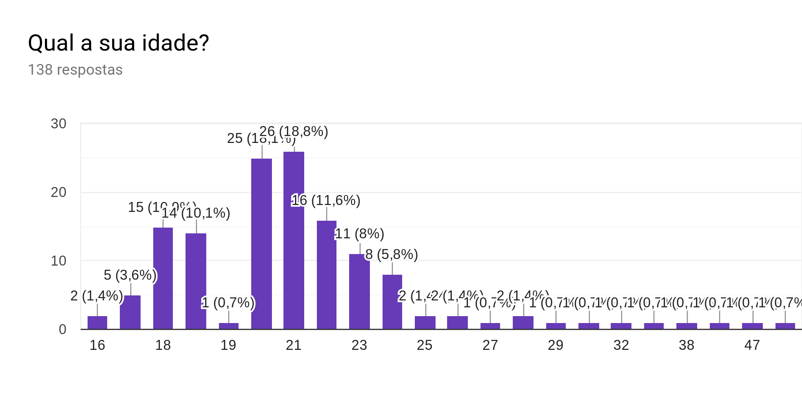
- Nível de Escolaridade: Superior Incompleto
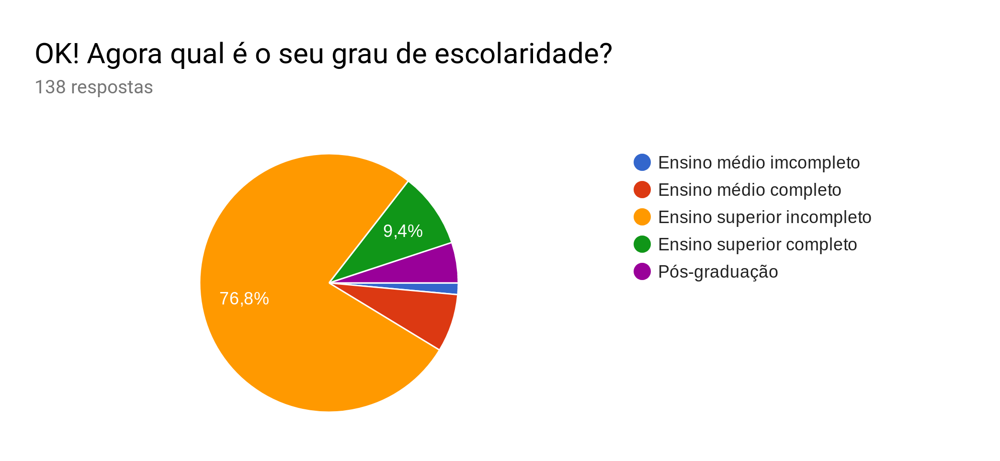
Sobre a Experiência com a Aplicação
- Tipo de conteúdo mais buscado: Acadêmico
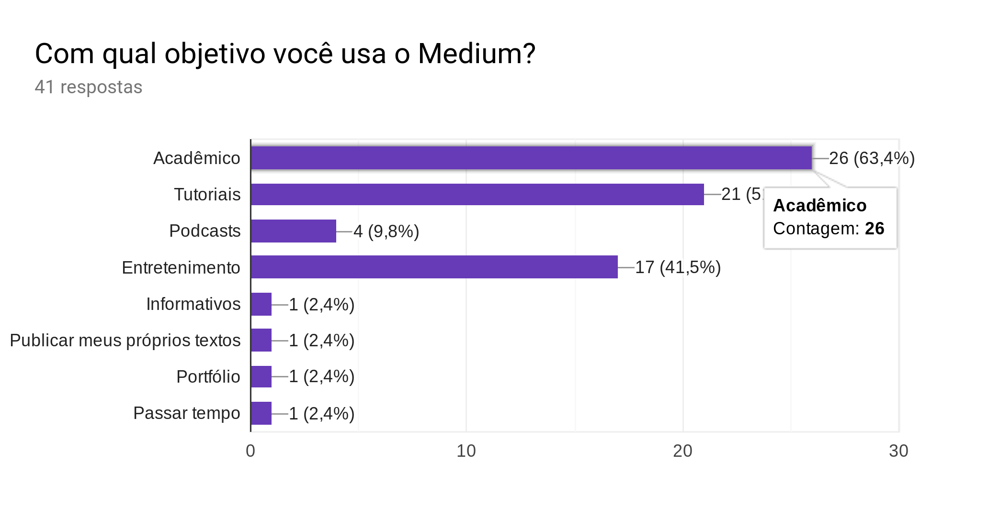
- Assuntos mais buscados: Tecnologia
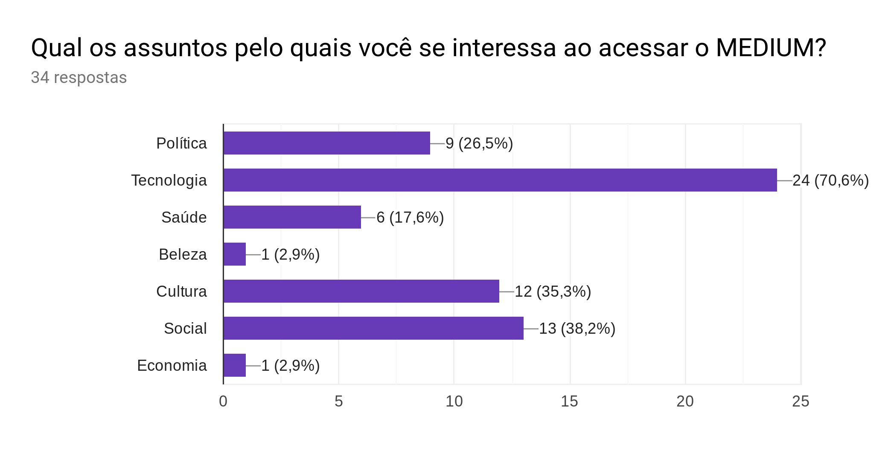
- Avaliação média dos usuários: "Bom"
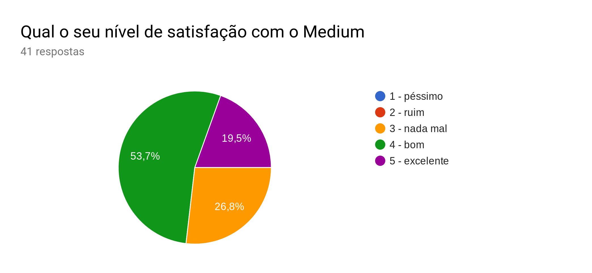
Ponto de vista de um Leitor
- Classificação da interface: "Boa" a "Ótima"
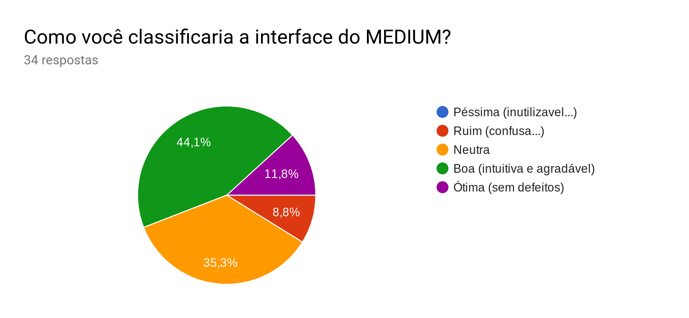
- Nível de Satisfação com conteúdo: "Neutra" a "Boa"
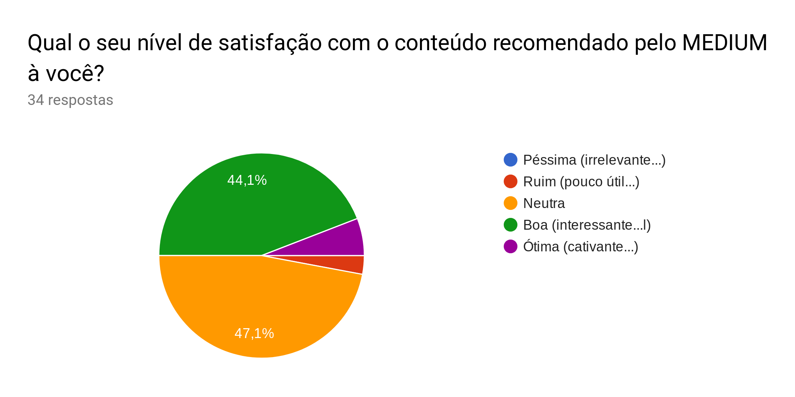
- Frequência de comentários: "Pouca"
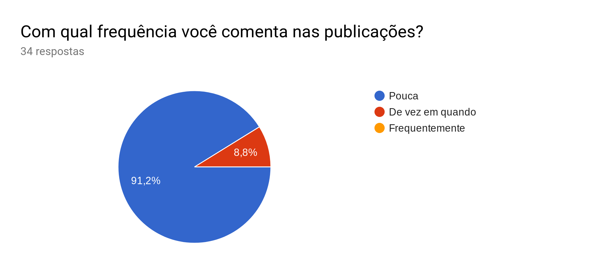
- Frequência de 'Aplausos': "Pouca"
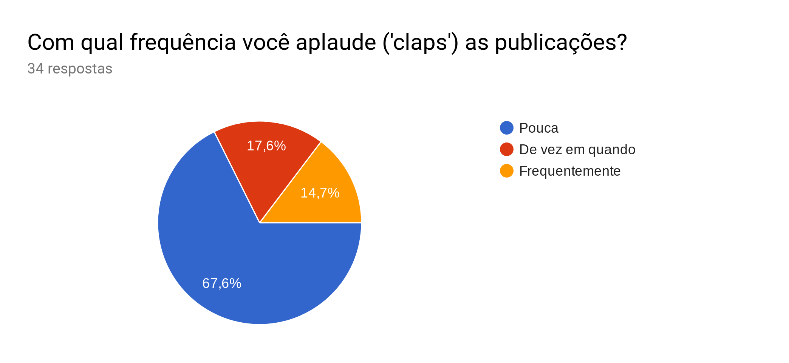
- Frequência de compartilhamento de publicações: "Pouca"
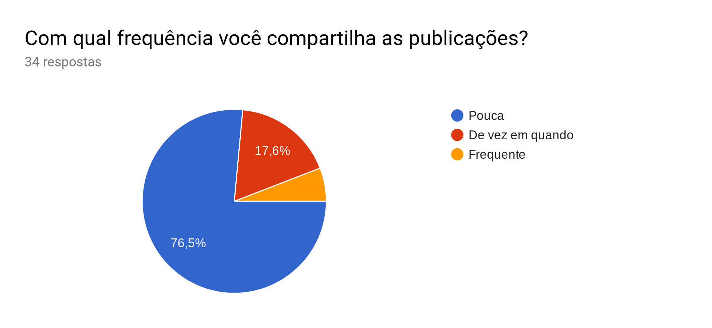
Ponto de Vista do Autor
Ponto de Vista do Autor
- Assuntos geralmente abordados
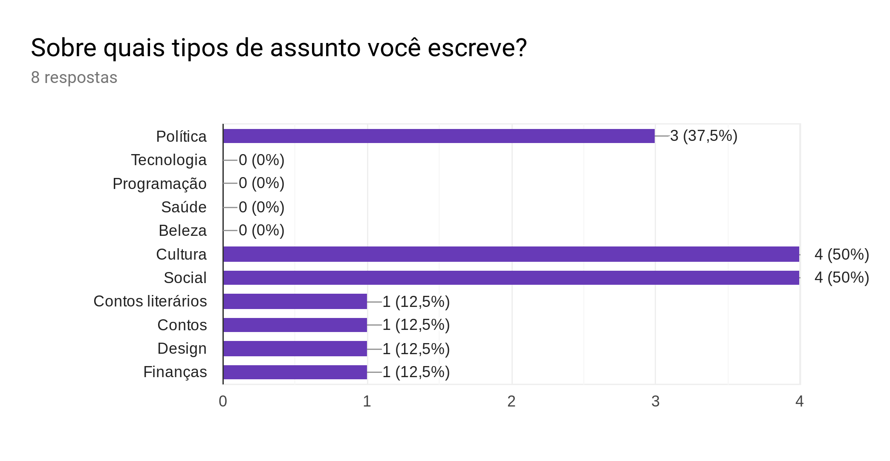
- Sobre o recurso de importar textos
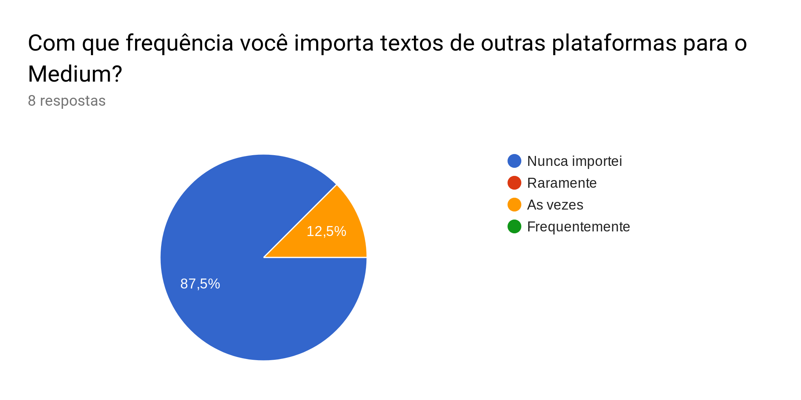
- O editor de textos agrada uma boa parte dos usuários
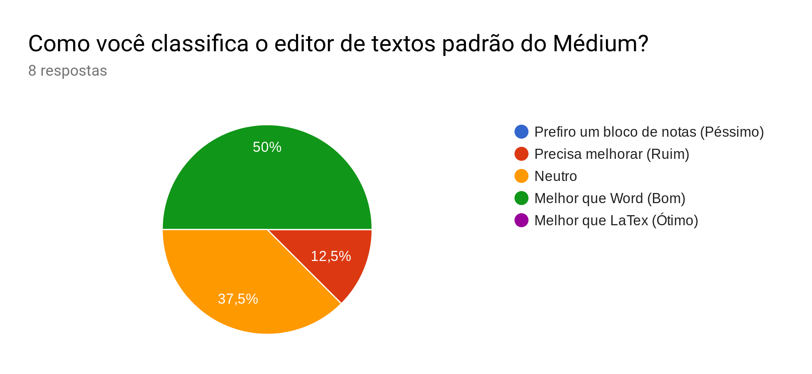
- O recurso de métricas acerca das publicações é pouco utilizado
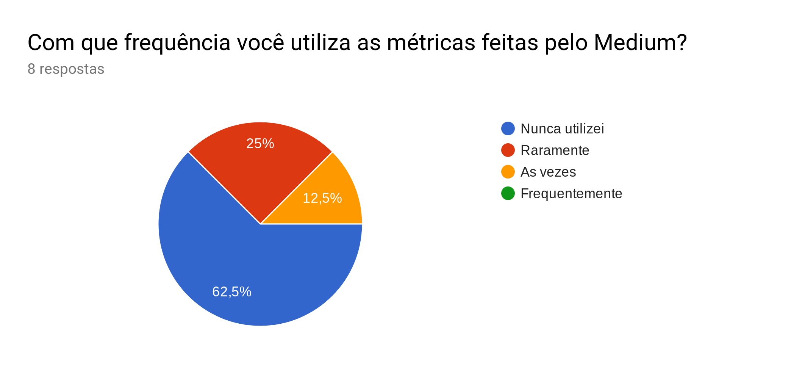
Críticas, Sugestões e Elogios
Dos elogios feitos à plataforma por meio de pergunta dissertativa, se destacam:
- “Fácil de encontrar bons artigos; leitura sem distrações; e estimativa de tempo de leitura”
- “Gratuito e fácil para quem quer escrever mas não tem plataforma.”
- “Interface limpa e normalmente sinto um padrão na forma de escrever, como pra deixar o assunto mais interessante. A questão da maioria dos textos ter uma estimativa de tempo pra ler o texto me agrada também. ”
- “Compartilhamento de ideias e opiniões”
Das poucas críticas feitas se destacam:
- “Depois de algumas publicações lidas, o Medium não deixa mais ler, ele começa a cobrar. As vezes eu uso até aba anônima pra abrir algum conteúdo, mas isso é um incomodo pra mim. Além disso, ainda não ficou evidente como posso contribuir com algum material no medium, poderia ser mais evidente. ”
- “Poucas opções de edição de textos, é necessário pagar para ter acesso aos conteúdos. “
E das sugestões: - “Continuar lendo de onde parei no PC, no celular” - “Tradução dos textos” - “Mais possibilidades de personalização de publicações, textos e perfil.”
Um fato interessante que foi notado durante a análise do formulário é que na área de sugestões uma parcela das respostas sugeria funcionalidades que já estão presentes na aplicação. Analisando isso podemos perceber que a aplicação não é muito efetiva em explicitar algumas de suas funcionalidade, e usuários que não interagem tão a fundo com a ferramenta acabam deixando passar desapercebido.